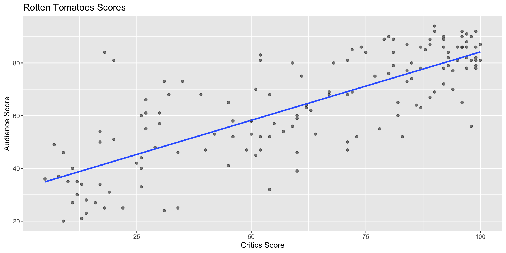
Logistic regression 1
Lecture 9
So where were we…
Thus far…
We have been studying regression:
What combinations of data types have we seen?
What did the picture look like?
Recap: simple linear regression
Numerical response and one numerical predictor:
Recap: simple linear regression
Numerical response and one categorical predictor (two levels):
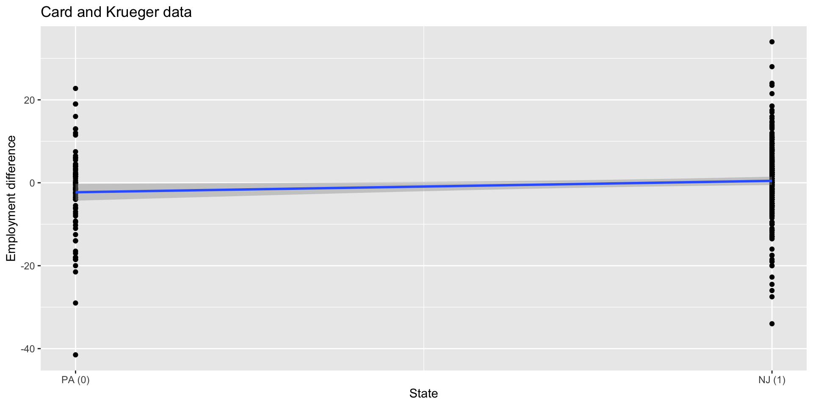
Recap: multiple linear regression
Numerical response; numerical and categorical predictors:
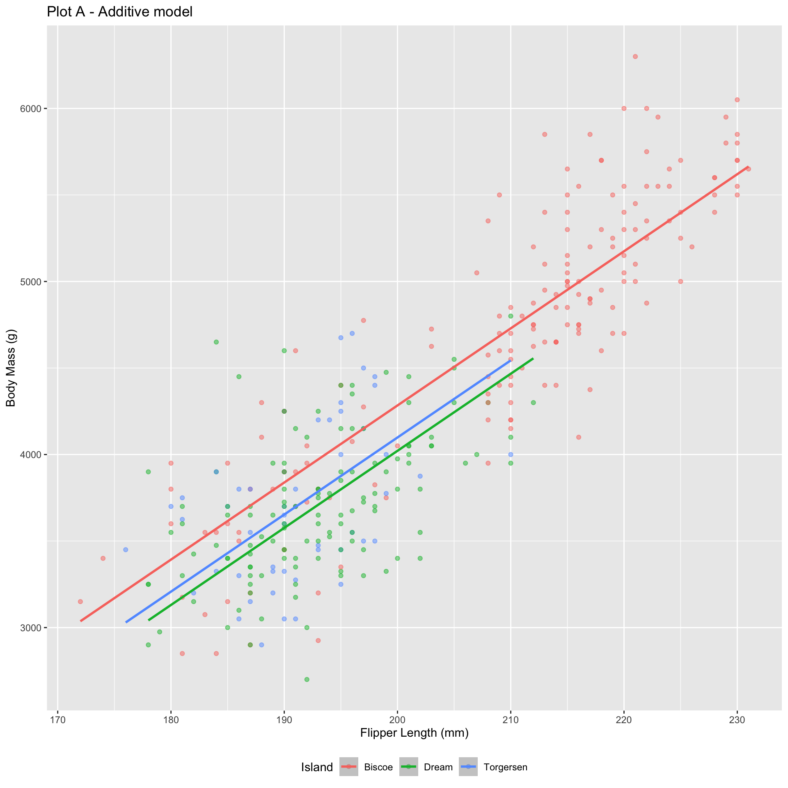
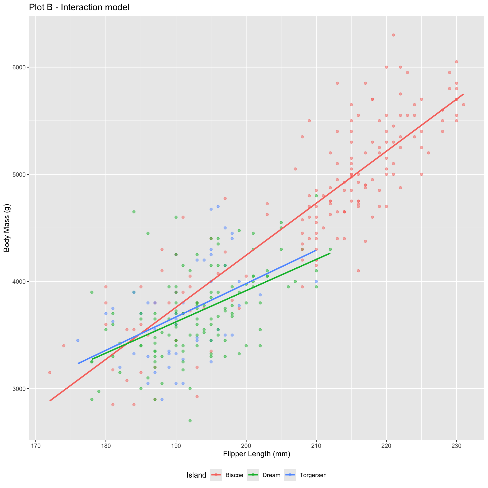
Today: a binary response
\[ y = \begin{cases} 1 & &&\text{eg. Yes, Win, True, Heads, Success}\\ 0 & &&\text{eg. No, Lose, False, Tails, Failure}. \end{cases} \]

Who cares?
If we can model the relationship between predictors (\(x\)) and a binary response (\(y\)), we can use the model to do a special kind of prediction called classification.
Example: is the e-mail spam or not?
\[ \mathbf{x}: \text{word and character counts in an e-mail.} \]
\[ y = \begin{cases} 1 & \text{it's spam}\\ 0 & \text{it's legit} \end{cases} \]
Example: is it pneumonia or not?
\[ \mathbf{x}: \text{features in a medical image.} \]
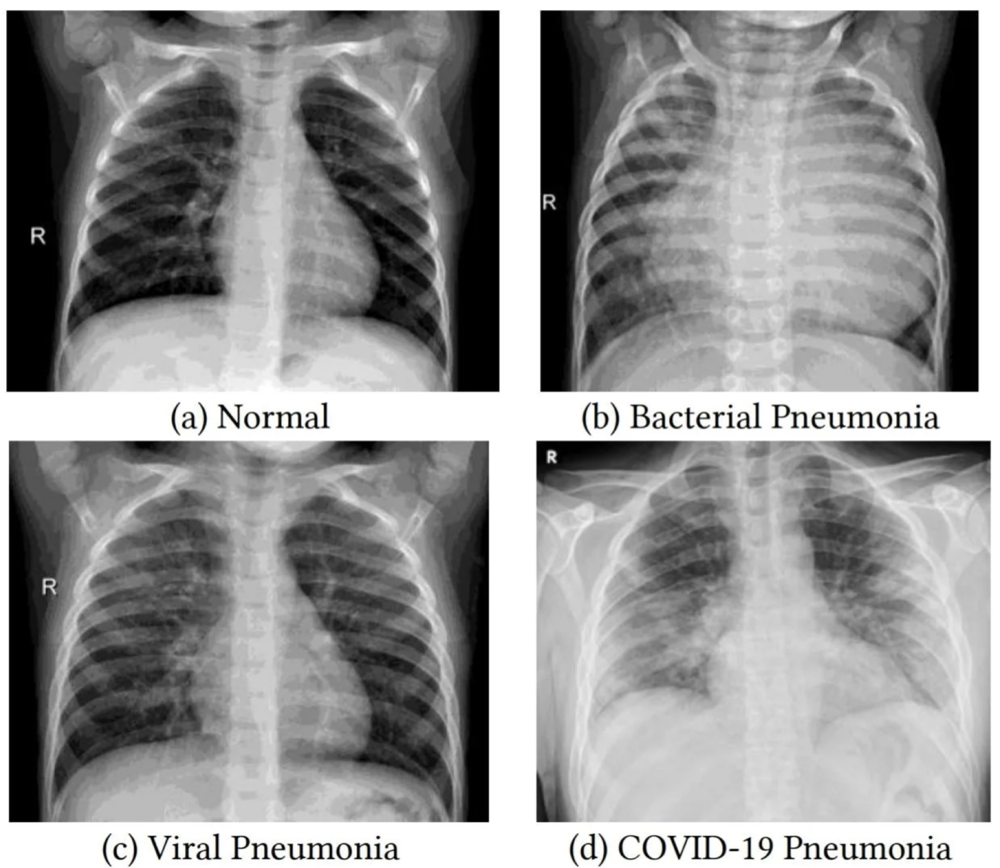
\[ y = \begin{cases} 1 & \text{it's pneumonia}\\ 0 & \text{it's healthy} \end{cases} \]
Example: will they default?
\[ \mathbf{x}: \text{financial and demographic info about a loan applicant.} \]
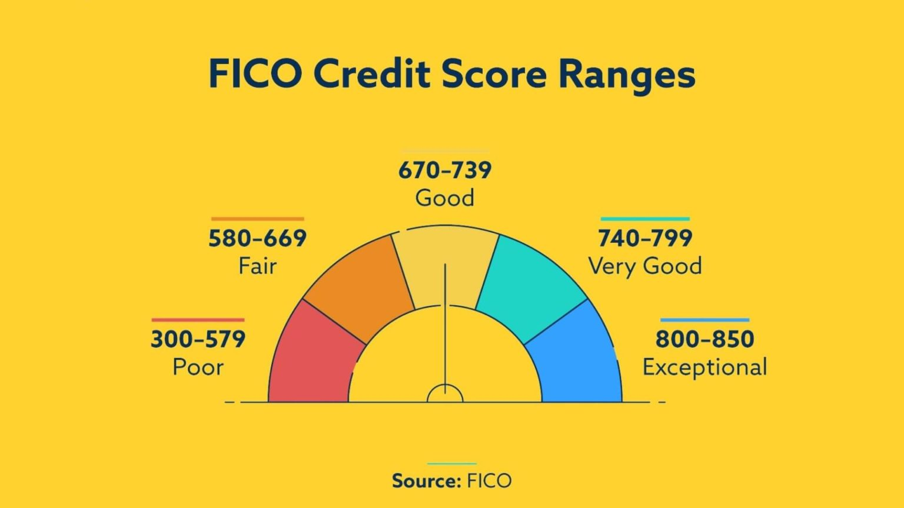
\[ y = \begin{cases} 1 & \text{applicant is at risk of defaulting on loan}\\ 0 & \text{applicant is safe} \end{cases} \]
Example: Who said it: TS or WS?
\[ \mathbf{x}: \text{word counts (e.g., thou, love, heartbreak), stylistic features} \]
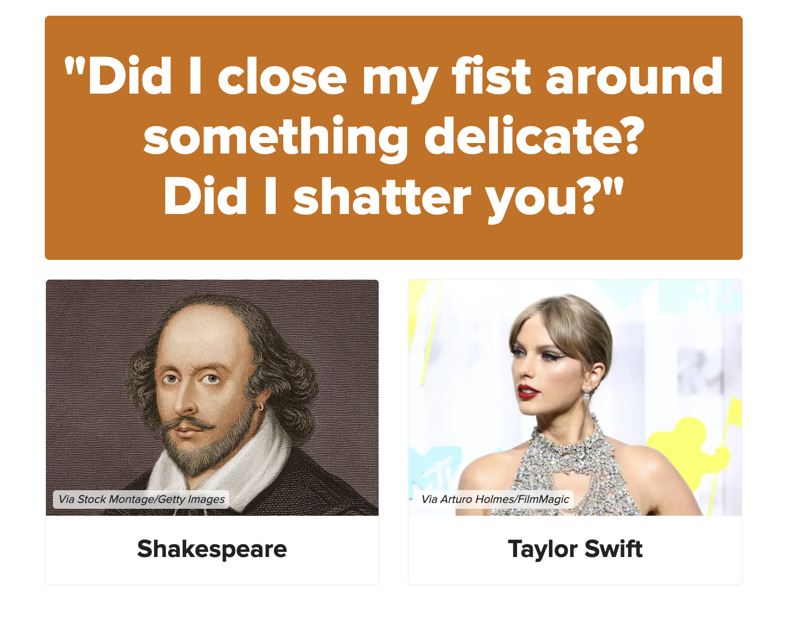
\[ y = \begin{cases} 1 & \text{Taylor Swift}\\ 0 & \text{William Shakespeare} \end{cases} \]
How do we model this type of data?
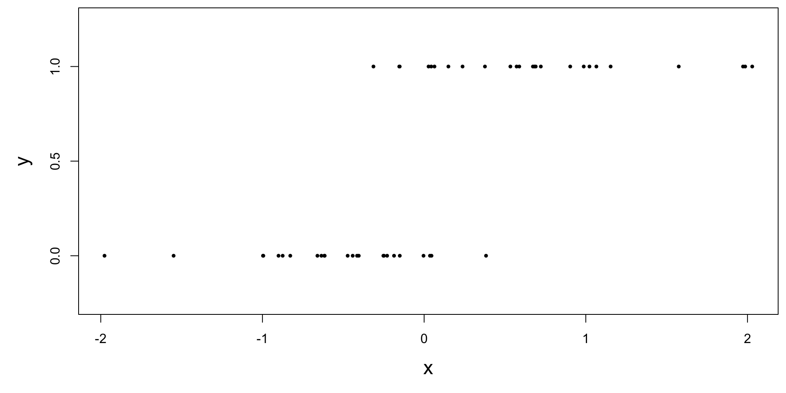
Straight line of best fit is a little silly
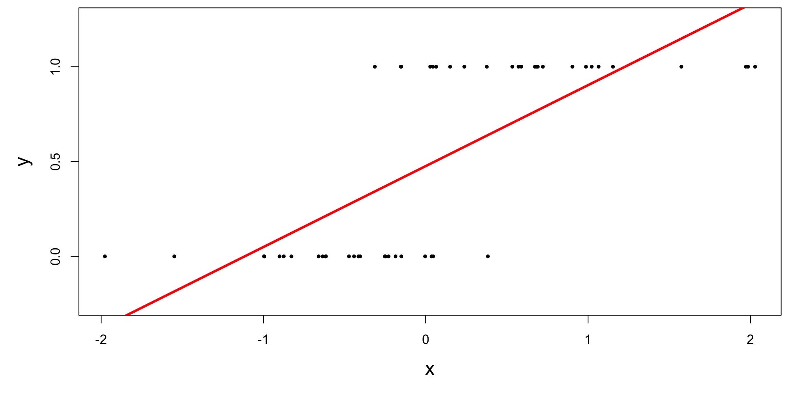
Possible, but silly.
Instead: S-curve of best fit
Instead of modeling \(y\) directly, we model the probability that \(y=1\):
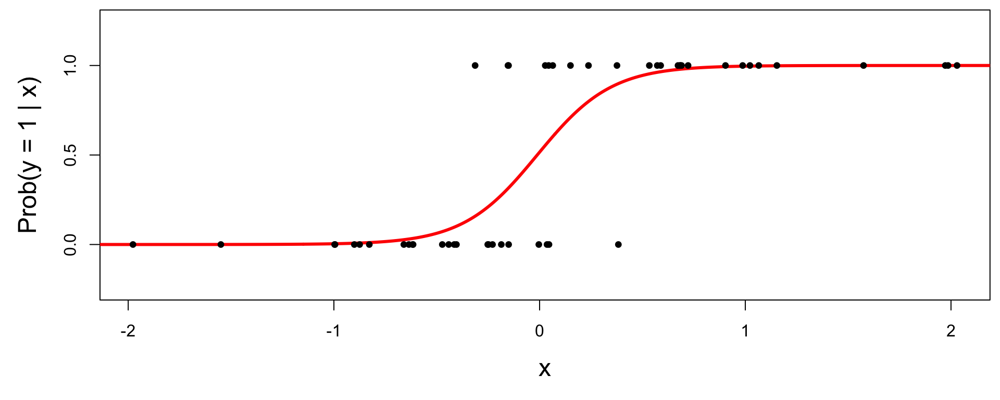
- “Given new email, what’s the probability that it’s spam?’’
- “Given new image, what’s the probability that it’s pneumonia?’’
- “Given new loan application, what’s the probability that they default?’’
Why don’t we model y directly?
-
Recall regression with a numerical response:
- Our models do not output guarantees for \(y\), they output predictions that describe behavior on average;
-
Similar when modeling a binary response:
- Our models cannot directly guarantee that \(y\) will be zero or one. The correct analog to “on average” for a 0/1 response is “what’s the probability?”
So, what is this S-curve, anyway?
It’s the logistic function
\[ \text{Prob}(y = 1\mid x) = \frac{e^{\beta_0+\beta_1x}}{1+e^{\beta_0+\beta_1x}}. \]
If you set \(p = \text{Prob}(y = 1\mid x)\) and do some algebra, you get the simple linear model for the log-odds:
\[ \log\left(\frac{p}{1-p}\right) = \beta_0+\beta_1x. \]
This is called the logistic regression model.
Log-odds?
- \(p = \text{Prob}(y = 1 \mid x)\) is a probability. A number between 0 and 1;
-
\(o=p / (1 - p)\) is the odds. A number between 0 and \(\infty\);
- This is just an alternative way of communicating the probability: “The odds of this lecture going well are 10 to 1;”
- The log odds \(\log(o)=\log(p / (1 - p))\) is a number between \(-\infty\) and \(\infty\), which is suitable for the linear model;
- Why does this “transformation” work? The log function maps positive numbers \((0, \infty)\) to all real numbers \((-\infty, \infty)\).
Probability to odds
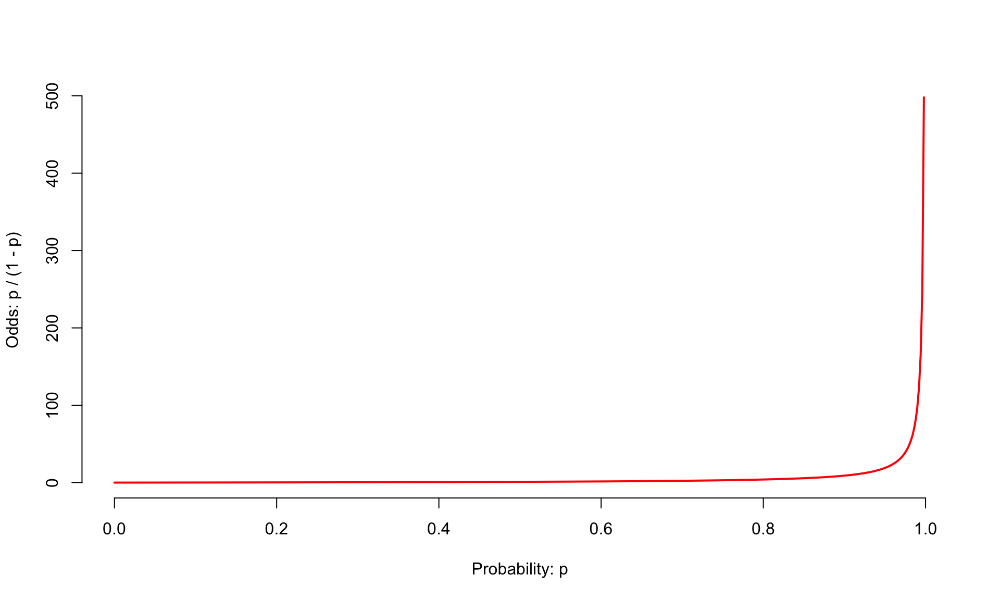
Zooming in
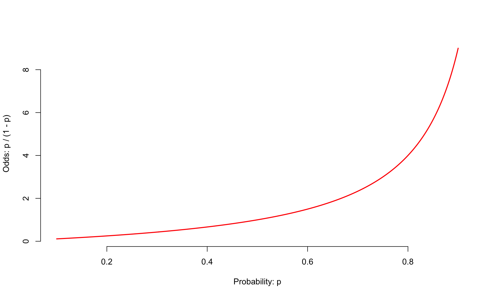
Odds to log odds
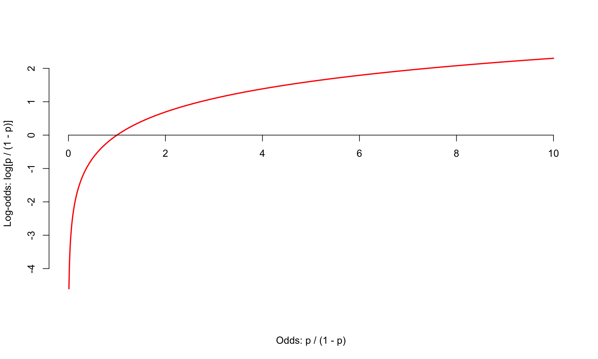
Put it all together
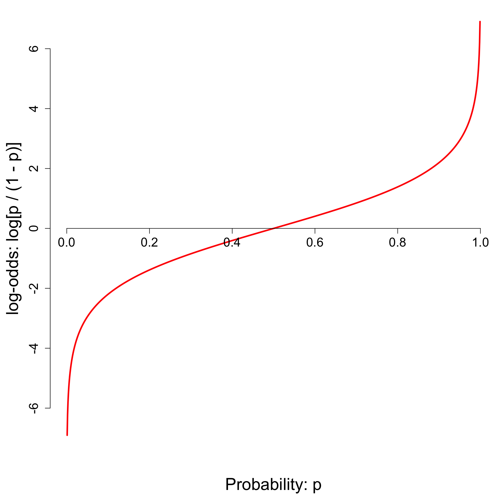
- \(p = 0 \to \text{log-odds}=-\infty\);
- \(p = 1/2 \to \text{log-odds}=0\);
- \(p = 1 \to \text{log-odds}=\infty\);
- And everything in between.
The log-odds transformation takes probabilities between 0 and 1 and streeetches them out to numbers between \(-\infty\) and \(\infty\), for which the linear model is appropriate.
Logistic regression
\[ \log\left(\frac{p}{1-p}\right) = \beta_0+\beta_1x. \]
The logit function \(\log(p / (1-p))\) is an example of a link function that transforms the linear model to have an appropriate range;
This is an example of a generalized linear model. Take a class like STA 210 to learn more.
How do the parameters control the shape?
\[ p = \frac{e^{\beta_0+\beta_1x}}{1+e^{\beta_0+\beta_1x}} \quad \Longleftrightarrow\quad \log\left(\frac{p}{1-p}\right) = \beta_0+\beta_1x. \]
#| '!! shinylive warning !!': |
#| shinylive does not work in self-contained HTML documents.
#| Please set `embed-resources: false` in your metadata.
#| standalone: true
#| viewerHeight: 500
library(shiny)
ui <- fluidPage(
titlePanel("Adjusting the shape of the S-curve"),
sidebarLayout(
sidebarPanel(
sliderInput("b0",
"β₀",
min = -5,
max = 5,
value = 0,
step = 0.1),
sliderInput("b1",
"β₁",
min = -5,
max = 5,
value = 1,
step = 0.1)
),
mainPanel(
plotOutput("distPlot")
)
)
)
# Define server logic required to draw a histogram
server <- function(input, output) {
output$distPlot <- renderPlot({
b0 <- input$b0
b1 <- input$b1
curve(exp(b0 + b1 * x) / (1 + exp(b0 + b1 * x)), from = -5, to = 5, n = 1000, col = "red", bty = "n", ylab = "Prob(y = 1 | x)", xlab = "x", ylim = c(0, 1), lwd = 5)
abline(v = 0)
points(0, exp(b0) / (1 + exp(b0)), pch = 19, col = "red", cex = 2)
})
}
# Run the application
shinyApp(ui = ui, server = server)Estimation
Estimation: picking the “best fitting” S-curve
#| '!! shinylive warning !!': |
#| shinylive does not work in self-contained HTML documents.
#| Please set `embed-resources: false` in your metadata.
#| standalone: true
#| viewerHeight: 500
library(shiny)
ui <- fluidPage(
titlePanel("Guess the best-fitting logistic curve"),
sidebarLayout(
sidebarPanel(
actionButton("new_data", "Generate new data"),
br(), br(),
sliderInput("b0",
"b₀",
min = -5,
max = 5,
value = 0,
step = 0.1),
sliderInput("b1",
"b₁",
min = -5,
max = 5,
value = 1,
step = 0.1),
checkboxInput("show_mle",
"Show MLE",
value = FALSE)
),
mainPanel(
plotOutput("distPlot"),
verbatimTextOutput("mle_output")
)
)
)
server <- function(input, output) {
# Store simulated data
sim_data <- reactiveVal()
# Function to generate a new dataset
generate_data <- function() {
# Prior on parameters, restricted to slider bounds
b0_true <- runif(1, -5, 5)
b1_true <- runif(1, -5, 5)
# Simulate x values
n <- 100
x <- runif(n, -5, 5)
# Logistic probabilities
p <- plogis(b0_true + b1_true * x)
# Simulate y values
y <- rbinom(n, size = 1, prob = p)
data.frame(
x = x,
y = y,
b0_true = b0_true,
b1_true = b1_true
)
}
# Generate initial data when app starts
sim_data(generate_data())
# Generate new data when button pressed
observeEvent(input$new_data, {
sim_data(generate_data())
})
output$distPlot <- renderPlot({
d <- sim_data()
b0 <- input$b0
b1 <- input$b1
# Plot the data
plot(d$x, d$y,
xlim = c(-5, 5),
ylim = c(-0.05, 1.05),
pch = 19,
xlab = "x",
ylab = "y",
bty = "n")
# User's curve
curve(plogis(b0 + b1 * x),
from = -5,
to = 5,
add = TRUE,
col = "red",
lwd = 5,
n = 1000)
abline(v = 0)
points(0, plogis(b0),
pch = 19,
col = "red",
cex = 2)
# MLE curve
if (input$show_mle) {
fit <- glm(y ~ x, data = d, family = binomial)
mle <- coef(fit)
curve(plogis(mle[1] + mle[2] * x),
from = -5,
to = 5,
add = TRUE,
col = "blue",
lwd = 3,
lty = 2,
n = 1000)
}
})
# MLE coefficient display
output$mle_output <- renderText({
if (!input$show_mle) {
return(NULL)
}
d <- sim_data()
fit <- glm(y ~ x, data = d, family = binomial)
mle <- coef(fit)
paste0(
"MLE: b₀ = ", round(mle[1], 2),
" b₁ = ", round(mle[2], 2)
)
})
}
shinyApp(ui = ui, server = server)Estimation
- Just like least squares linear regression, the problem of finding the “best-fitting” S-curve can be made mathematically precise and solved with calculus;
- That’s not your problem. Trust that the computer knows what to do;
- Given messy, incomplete, imperfect data, the fitted curve is:
\[ \log\left(\frac{\widehat{p}}{1-\widehat{p}}\right) = b_0+b_1x. \]
- \(b_0\) and \(b_1\) are our best guess estimates of the ideal but unknown \(\beta_0\) and \(\beta_1\).
Today’s data
Rows: 3,921
Columns: 6
$ spam <fct> 0, 0, 0, 0, 0, 0, 0, 0, 0, 0, 0, 0, 0, 0, 0, 0, 0, 0, 0, …
$ dollar <dbl> 0, 0, 4, 0, 0, 0, 0, 0, 0, 0, 0, 0, 0, 0, 2, 0, 5, 0, 0, …
$ viagra <dbl> 0, 0, 0, 0, 0, 0, 0, 0, 0, 0, 0, 0, 0, 0, 0, 0, 0, 0, 0, …
$ winner <fct> no, no, no, no, no, no, no, no, no, no, no, no, no, no, n…
$ password <dbl> 0, 0, 0, 0, 2, 2, 0, 0, 0, 0, 0, 0, 0, 0, 0, 0, 1, 0, 0, …
$ exclaim_mess <dbl> 0, 1, 6, 48, 1, 1, 1, 18, 1, 0, 2, 1, 0, 10, 4, 10, 20, 0…Fitting a logistic model
Very similar to code you have already seen:
logistic_fit <- logistic_reg() |>
fit(spam ~ exclaim_mess, data = email)
tidy(logistic_fit)# A tibble: 2 × 5
term estimate std.error statistic p.value
<chr> <dbl> <dbl> <dbl> <dbl>
1 (Intercept) -2.27 0.0553 -41.1 0
2 exclaim_mess 0.000272 0.000949 0.287 0.774Fitted equation for the log-odds:
\[ \log\left(\frac{\hat{p}}{1-\hat{p}}\right) = -2.27 + 0.000272\times exclaim~mess \]
Interpretation
Recall: simple linear regression
\[ \hat{y}=b_0+b_1x. \]
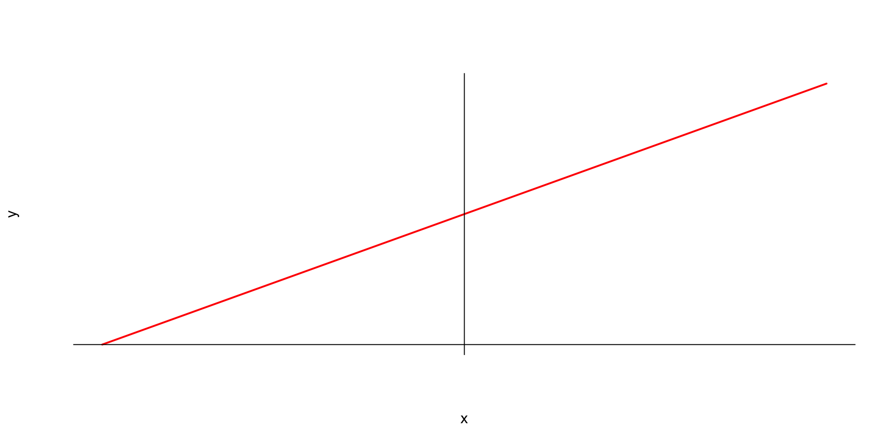
The intercept in linear regression
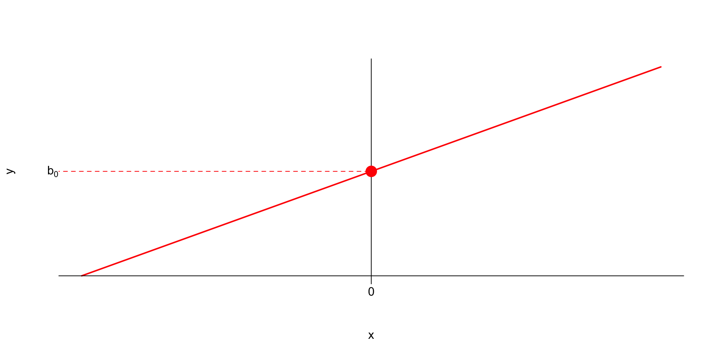
It’s the model’s prediction for \(y\) when \(x=0\).
The intercept in linear regression
Plug in \(x=0\) and simplify:
\[ \hat{y}=b_0+b_1\cdot 0=b_0. \]
If \(x=0\), we predict \(y\) will be \(b_0\) on average.
The slope in linear regression
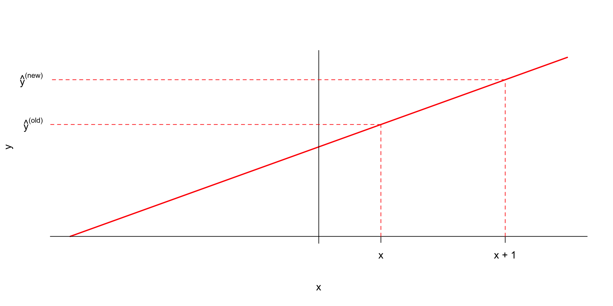
How does the prediction change when you change the input?
The slope in linear regression
At \(x\), you predict:
\[ \hat{y}^{(\text{old})} = b_0+b_1x. \]
. . .
At \(x + 1\), you predict:
\[ \hat{y}^{(\text{new})} = b_0+b_1(x+1) = b_0+b_1x+b_1=\hat{y}^{(\text{old})}+b_1. \]
. . .
So when the predictor shifts from \(x\) to \(x+1\), the slope \(b_1\) tells you the additive adjustment you must make to go from the old prediction to the new one. It’s the same adjustment regardless the \(x\) you start from.
The “intercept” in logistic regression
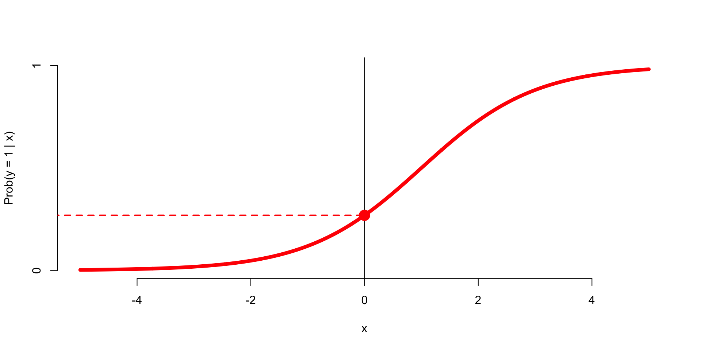
The “intercept” determines what the model predicts when x = 0.
The “intercept” in logistic regression
Plug in \(x=0\) and simplify the formula:
\[ \hat{p}=\widehat{P(y=1\mid x = 0)}=\frac{e^{b_0+b_1\times 0}}{1+e^{b_0+b_1\times 0}}=\frac{e^{b_0}}{1+e^{b_0}}. \]
If \(x=0\), we predict that on average \(y=1\) with probability \(\frac{e^{b_0}}{1+e^{b_0}}\).
For our example
\[ \log\left(\frac{\hat{p}}{1-\hat{p}}\right) = -2.27 + 0.000272\times exclaim~mess \]
If exclaim_mess = 0, then
\[ \hat{p}=\widehat{P(y=1\mid x = 0)}=\frac{e^{-2.27}}{1+e^{-2.27}}\approx 0.09. \]
So, our model predicts that an email with no exclamation marks has a 9% probability of being spam.
The “slope” in logistic regression
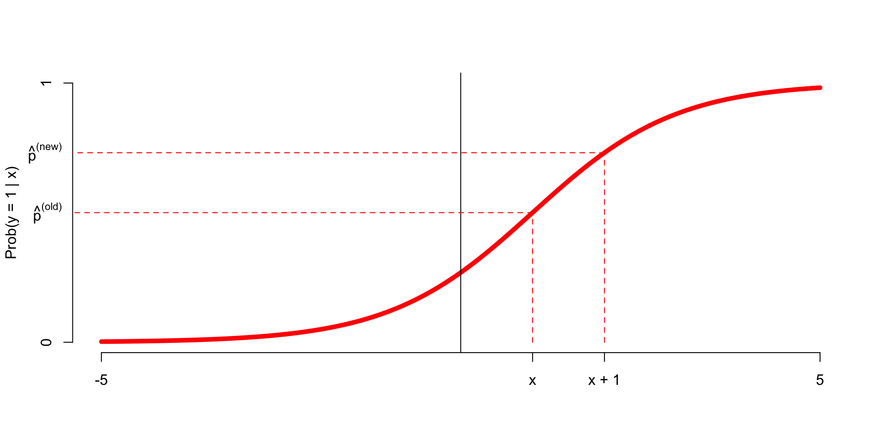
How does the prediction change when you change the input?
The “slope” in logistic regression
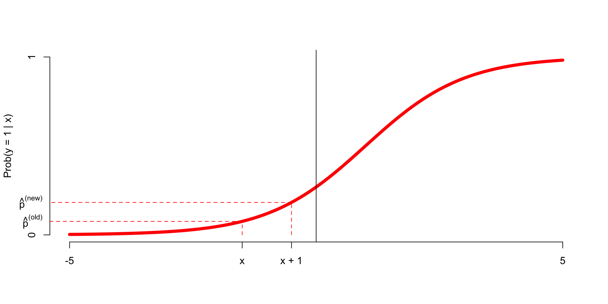
Does the adjustment depend on the \(x\) you’re starting from?
Three versions of the same model
Probability:
\[ \hat{p} = \frac{e^{b_0+b_1x}}{1+e^{b_0+b_1x}}. \]
Odds:
\[ \hat{o}=\frac{\widehat{p}}{1-\widehat{p}}=e^{b_0+b_1 x}. \]
Log-odds:
\[ \log\left(\hat{o}\right) = \log\left(\frac{\widehat{p}}{1-\widehat{p}}\right) = b_0+b_1x. \]
How do the log-odds adjust?
At \(x\), you predict:
\[ \log\left(\hat{o}^{(\text{old})}\right) = b_0+b_1x. \]
. . .
At \(x + 1\), you predict:
\[ \begin{aligned} \log\left(\hat{o}^{(\text{new})}\right) &= b_0+b_1(x+1)\\ &= b_0+b_1x+b_1 \\ &= \log\left(\hat{o}^{(\text{old})}\right)+b_1. \end{aligned} \]
. . .
Just like in linear regression, when the predictor shifts from \(x\) to \(x+1\), the “slope” \(b_1\) tell you the additive adjustment you must make to go from the old log-odds to the new log-odds. It’s the same adjustment regardless the \(x\) you start from.
How do the odds adjust?
At \(x\), you predict:
\[ \hat{o}^{(\text{old})} = e^{b_0+b_1x}. \]
. . .
At \(x + 1\), you predict:
\[ \hat{o}^{(\text{new})} = e^{b_0+b_1(x+1)} = e^{b_0+b_1x+b_1} = e^{b_0+b_1x}e^{b_1} = \hat{o}^{(\text{old})}\times e^{b_1} . \]
. . .
When the predictor shifts from \(x\) to \(x+1\), the transformed “slope” \(e^{b_1}\) tell you the multiplicative adjustment you must make to go from the old odds to the new odds. It’s the same adjustment regardless the \(x\) you start from.
wut
We have this:
\[ \hat{o}^{(\text{new})} = \hat{o}^{(\text{old})}\times e^{b_1} . \]
- If \(b_1=0\), then \(e^{b_1}=e^0=1\), so no change: \(\hat{o}^{(\text{new})}=\hat{o}^{(\text{old})}\);
- If \(b_1>0\), then \(e^{b_1}>1\), so \(\hat{o}^{(\text{new})}\) is higher;
- If \(b_1<0\), then \(0<e^{b_1}<1\), so \(\hat{o}^{(\text{new})}\) is lower.
For our example
\[ \log\left(\frac{\hat{p}}{1-\hat{p}}\right) = -2.27 + 0.000272\times exclaim~mess \]
If the email has an additional exclamation mark, we predict the odds of an email being spam to be higher by a multiplicative factor of \(e^{0.000272}\approx 1.000272\) on average.
How does the probability adjust?
At \(x\), you predict:
\[ \hat{p}^{(\text{old})} = \frac{e^{b_0+b_1x}}{1+e^{b_0+b_1x}} \]
At \(x + 1\), you predict:
\[ \hat{p}^{(\text{new})} = \frac{e^{b_0+b_1(x+1)}}{1+e^{b_0+b_1(x+1)}} \]
This one is tougher. You are not responsible for it, but if you really want to know, the math is relatively painless if you’re into that sort of thing:
. . .
How are \(\hat{p}^{(\text{old})}\) and \(\hat{p}^{(\text{new})}\) related?
Like this:
\[ \hat{p}^{(\text{new})} = \frac{e^{b_1}\hat{p}^{(\text{old})}}{1-\hat{p}^{(\text{old})}+e^{b_1}\hat{p}^{(\text{old})}} \]
The adjustment depends on the \(x\) you are starting from, just like we saw in the picture.
Summary
- The “intercept” coefficient \(b_0\) can be transformed into \(\frac{e^{b_0}}{1+e^{b_0}}\), which is directly interpretable as the predicted probability that \(y=1\) when \(x=0\);
- The “slope” coefficient \(b_1\) is more delicate. It can be transformed into \(e^{b_1}\), which is interpretable as the multiplicative adjustment in the predicted odds when we go from \(x\) to \(x+1\).
Summary: three equivalent representations
| Version | equation | Friendly LHS? | Friendly RHS? |
|---|---|---|---|
| Probability: (0, 1) | \[\hat{p}=\frac{e^{b_0+b_1x}}{1+e^{b_0+b_1x}}\] | ✅ | ❌ |
| Odds: \((0,\,\infty)\) | \[\hat{o}=\frac{\hat{p}}{1-\hat{p}}=e^{b_0+b_1x}\] | 🥴 | 🥴 |
| Log-odds: \((-\infty,\,\infty)\) | \[\log(\hat{o})=b_0+b_1x\] | ❌ | ✅ |
Take your pick depending on what you’re trying to do.
Classification
Classification
We have this model:
\[ \hat{p}=\widehat{\text{Prob}(y=1\mid x)} = \frac{e^{b_0+b_1x}}{1+e^{b_0+b_1x}}. \]
Given \(x\), we predict the probability that \(y=1\). But…so? If you hand me \(x\), is \(y=1\) or not? How can we use this model to produce a concrete prediction for the value of \(y\)? Behold…
Step 0: fit the model
Select a number \(0 < p^* < 1\):
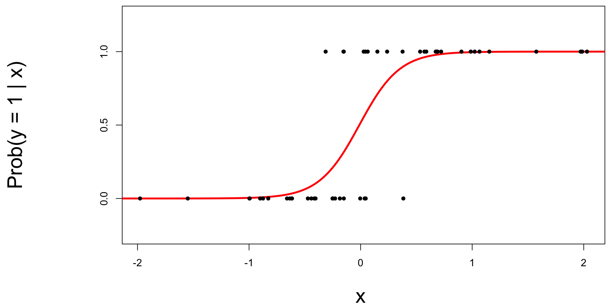
- if \(\text{Prob}(y=1)\leq p^*\), then predict \(\widehat{y}=0\);
- if \(\text{Prob}(y=1)> p^*\), then predict \(\widehat{y}=1\).
Step 1: pick a threshold
Select a number \(0 < p^* < 1\):
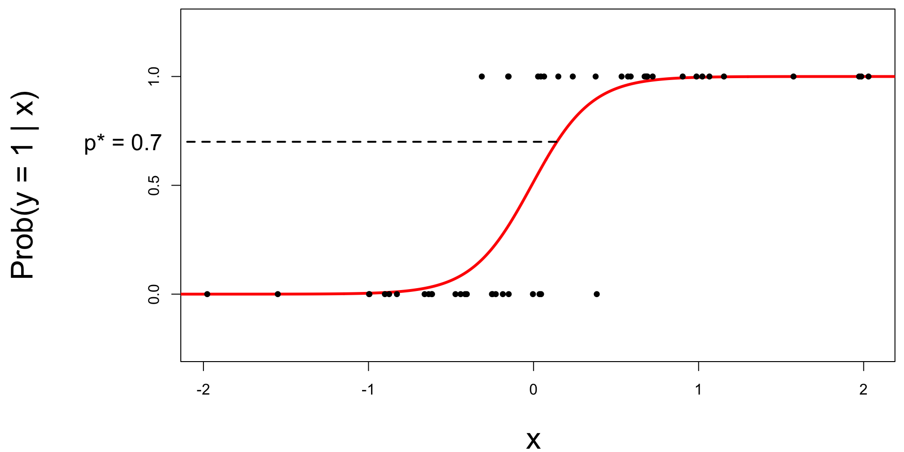
- if \(\text{Prob}(y=1)\leq p^*\), then predict \(\widehat{y}=0\);
- if \(\text{Prob}(y=1)> p^*\), then predict \(\widehat{y}=1\).
Step 2: find the “decision boundary”
Solve for the x-value that matches the threshold:
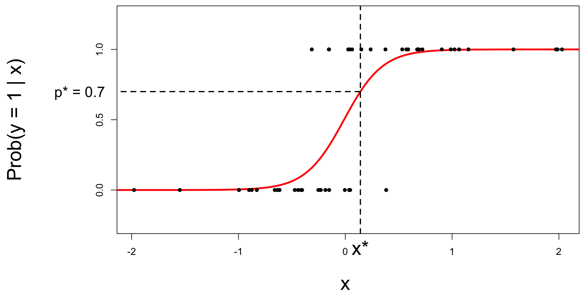
- if \(\text{Prob}(y=1)\leq p^*\), then predict \(\widehat{y}=0\);
- if \(\text{Prob}(y=1)> p^*\), then predict \(\widehat{y}=1\).
Step 3: classify a new arrival
A new person shows up with \(x_{\text{new}}\). Which side of the boundary are they on?
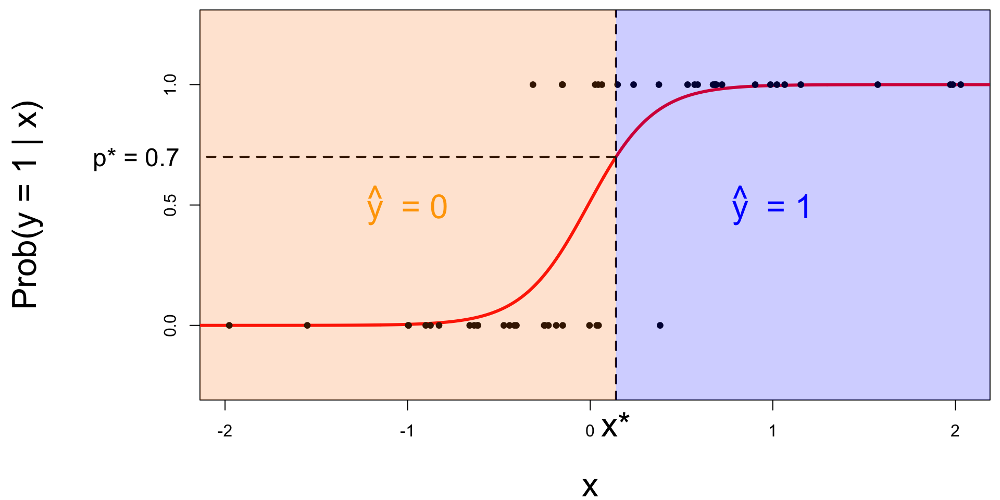
- if \(x_{\text{new}} \leq x^\star\), then \(\text{Prob}(y=1)\leq p^*\), so predict \(\widehat{y}=0\) for the new person;
- if \(x_{\text{new}} > x^\star\), then \(\text{Prob}(y=1)> p^*\), so predict \(\widehat{y}=1\) for the new person.
Let’s change the threshold
A new person shows up with \(x_{\text{new}}\). Which side of the boundary are they on?
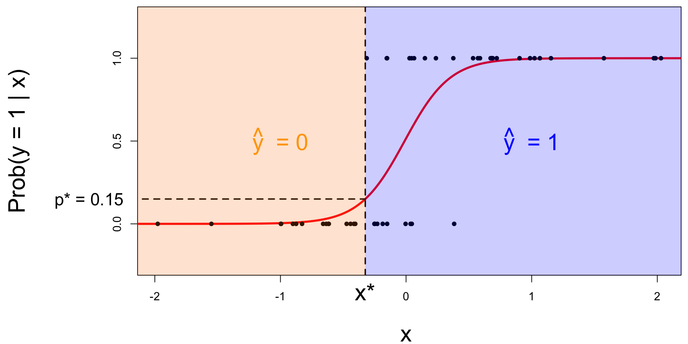
- if \(x_{\text{new}} \leq x^\star\), then \(\text{Prob}(y=1)\leq p^*\), so predict \(\widehat{y}=0\) for the new person;
- if \(x_{\text{new}} > x^\star\), then \(\text{Prob}(y=1)> p^*\), so predict \(\widehat{y}=1\) for the new person.
Let’s change the threshold
A new person shows up with \(x_{\text{new}}\). Which side of the boundary are they on?
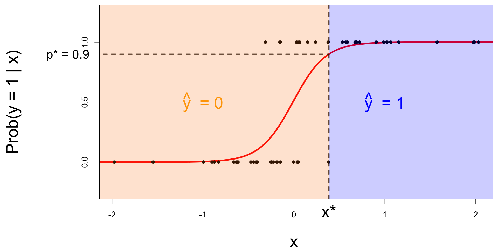
- if \(x_{\text{new}} \leq x^\star\), then \(\text{Prob}(y=1)\leq p^*\), so predict \(\widehat{y}=0\) for the new person;
- if \(x_{\text{new}} > x^\star\), then \(\text{Prob}(y=1)> p^*\), so predict \(\widehat{y}=1\) for the new person.
Nothing special about one predictor…
Two numerical predictors and one binary response:
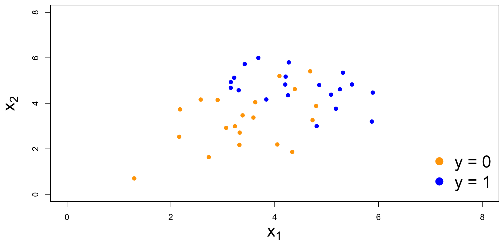
“Multiple” logistic regression
For the log-odds, a multiple linear regression:
\[ \log\left(\frac{p}{1-p}\right) = \beta_0+\beta_1x_1+\beta_2x_2+...+\beta_mx_m. \] On the probability scale:
\[ \text{Prob}(y = 1 \mid x) = \frac{e^{\beta_0+\beta_1x_1+\beta_2x_2+...+\beta_mx_m}}{1+e^{\beta_0+\beta_1x_1+\beta_2x_2+...+\beta_mx_m}}. \]
Decision boundary, again
It’s linear! Consider two numerical predictors:
- if new \((x_1,\,x_2)\) below, \(\text{Prob}(y=1)\leq p^*\). Predict \(\widehat{y}=0\) for the new person;
- if new \((x_1,\,x_2)\) above, \(\text{Prob}(y=1)> p^*\). Predict \(\widehat{y}=1\) for the new person.
Decision boundary, again
It’s linear! Consider two numerical predictors:
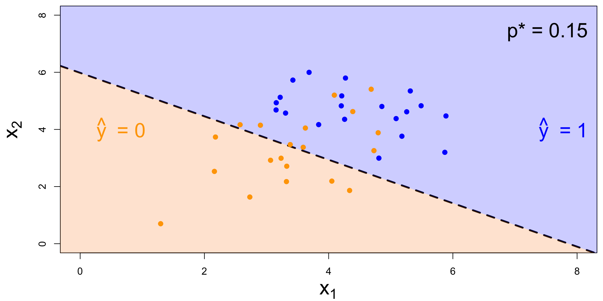
- if new \((x_1,\,x_2)\) below, \(\text{Prob}(y=1)\leq p^*\). Predict \(\widehat{y}=0\) for the new person;
- if new \((x_1,\,x_2)\) above, \(\text{Prob}(y=1)> p^*\). Predict \(\widehat{y}=1\) for the new person.
Decision boundary, again
It’s linear! Consider two numerical predictors:
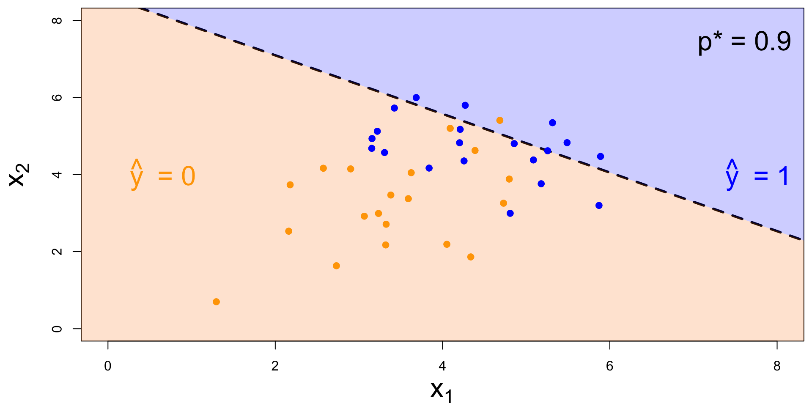
- if new \((x_1,\,x_2)\) below, \(\text{Prob}(y=1)\leq p^*\). Predict \(\widehat{y}=0\) for the new person;
- if new \((x_1,\,x_2)\) above, \(\text{Prob}(y=1)> p^*\). Predict \(\widehat{y}=1\) for the new person.
Note: the classifier isn’t perfect
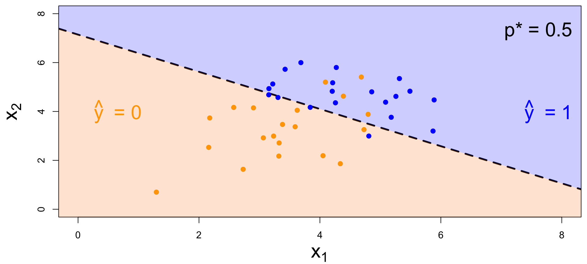
- There are blue points in the orange region: spam (1) emails misclassified as legit (0);
- There are orange points in the blue region: legit (0) emails misclassified as spam (1).
How do you pick the threshold?
To balance out the two kinds of errors:
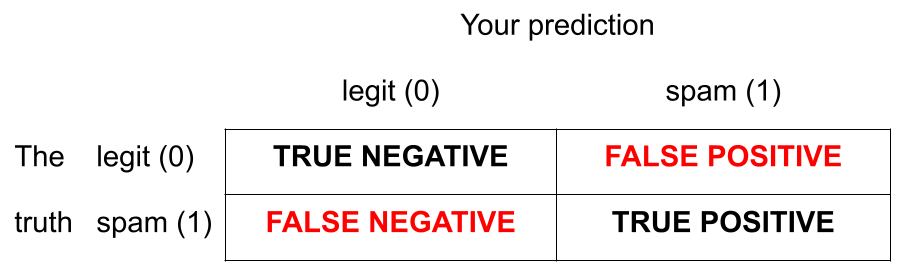
- High threshold >> Hard to classify as 1 >> FP less likely; FN more likely;
- Low threshold >> Easy to classify as 1 >> FP more likely; FN less likely;
- You don’t want to make mistakes of either kind, you it’s always a balancing act.
Silly examples
-
Set p* = 0
- Classify every email as spam (1);
- No false negatives, but a lot of false positives;
-
Set p* = 1
- Classify every email as legit (0);
- No false positives, but a lot of false negatives.
You pick a threshold in between to strike a balance. The exact number depends on context.